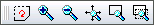
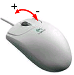
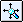

|
||
 |
||


10 Viewing
The view menu and toolbar offer some tools to adjust the current viewport of the drawing. All these tools have absolutely no effect on the entities of the drawing. They only change the zoom factor and the visible area (viewport).
Viewing tools are probably the most often used functions in a CAD
system. They can be easily accessed from the viewing toolbar (Figure
12). For the ones you use most, it's worth remembering and
using the hotkey. To show the whole drawing, simply press
ZA.
If the command line has the keyboard focus, you need to press the Escape
key to release the focus first.

Figure 12: The viewing toolbar.
Scrolling
Use the two scrollbars at the right and the bottom of a drawing window to
scroll around in a drawing. If you have a wheel mouse, you can also use
the wheel to scroll up and down or left and right while holding down the
shift key.
If your mouse has three mouse buttons, the middle mouse button
can be used to change the current view by dragging the drawing around.
Redrawing
Toolbar:
Menu:
View - Redraw
Hotkey:
zr, rg
Command:
regen
Redraws the current drawing. After moving or deleting a lot of entities the drawing can look incomplete or 'fuzzy'. With this function you can regenerate the graphic view.
Zooming In / Out
Toolbar:
Menu:
View - Zoom in
View - Zoom out
Hotkey:
+ / -
Command:
?
This tool increases / decreases the current viewing factor by 1.5. The same effect can also be achieved by pressing the Control-Key on the keyboard and moving the mouse wheel (Figure 13).

Figure 13: Use the Control-Key and the mouse wheel to zoom in / out quickly.
Auto Zoom
Toolbar:

Menu:
View - Auto Zoom
Hotkey:
za
Command:
?
Scales the drawing view so that all entities that are on visible layers fit on the screen.
Window Zoom
Toolbar:
Menu:
View - Window Zoom
Hotkey:
zw
Command:
?
This tool offers a quick way to view a certain area of the drawing.
Procedure:
- Specify the first corner of the area you want to view. Click the left mouse button at that corner and keep it down.
- Drag the mouse to the second corner of the area.
- Let go of the mouse button at the second corner.
Note: Alternatively you can specify the first and the second corner each with a single mouse click instead of dragging the mouse around with the mouse button pressed.
Panning
Toolbar:
Menu:
View - Pan Zoom
Hotkey:
zp
Command:
?
Panning means moving around in the drawing. The quickest way to do so is using the middle mouse button and move the view similar like you would move a paper around: press the middle mouse button and hold it while moving the drawing around. If your mouse doesn't have a middle mouse button you can use this tool instead and do the same with the left mouse button. Click the right mouse button when you're done.
|